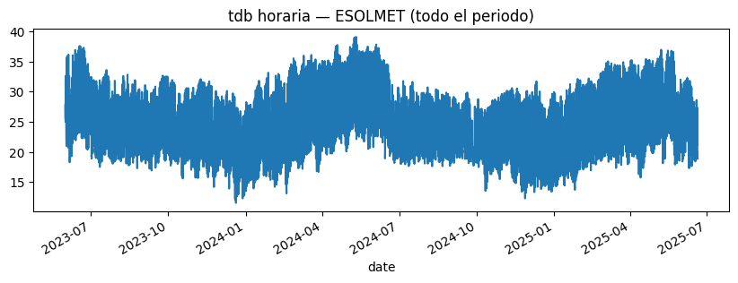
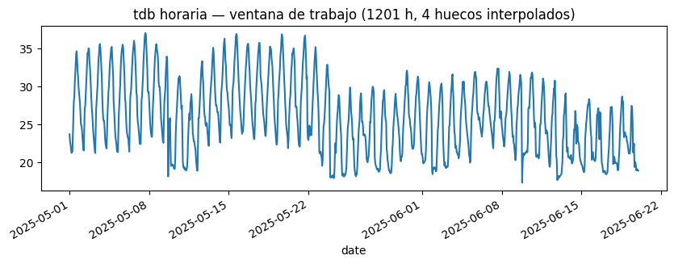

import marimo as mo
import pandas as pd
import numpy as np
import matplotlib.pyplot as plt
from statsmodels.tsa.statespace.sarimax import SARIMAX
from statsmodels.graphics.tsaplots import plot_acf, plot_pacff = 'data/ClimaLab_2023-05-31_2025-06-20.parquet'
tdb_all = pd.read_parquet(f)['tdb']
tdb_h = tdb_all.resample('h').mean().dropna()
tdb_h.plot(figsize=(10, 3), title='tdb horaria — ESOLMET (todo el periodo)')
tdb = tdb_h.loc['2025-05-01':'2025-06-20']
y = tdb.astype(float).asfreq('h').interpolate('time')
gaps = int(tdb.asfreq('h').isna().sum())
tdb.plot(figsize=(10, 3), title=f'tdb horaria — ventana de trabajo ({len(y)} h, {gaps} huecos interpolados)')
horizon = 240
y_train = y.iloc[:-horizon]
y_test = y.iloc[-horizon:]
mo.md(
f"Train: **{len(y_train)}** h ({y_train.index[0]} → {y_train.index[-1]}) \n"
f"Test: **{len(y_test)}** h ({y_test.index[0]} → {y_test.index[-1]})"
)Train: 961 h (2025-05-01 00:00:00 → 2025-06-10 00:00:00)
Test: 240 h (2025-06-10 01:00:00 → 2025-06-20 00:00:00)
order_form = (
mo.md(
"""
**Non-seasonal** p = {p}, d = {d}, q = {q}
**Seasonal** P = {P}, D = {D}, Q = {Q}, s = {s}
"""
)
.batch(
p=mo.ui.slider(0, 5, value=2, label="p"),
d=mo.ui.slider(0, 2, value=0, label="d"),
q=mo.ui.slider(0, 5, value=1, label="q"),
P=mo.ui.slider(0, 2, value=1, label="P"),
D=mo.ui.slider(0, 1, value=1, label="D"),
Q=mo.ui.slider(0, 2, value=1, label="Q"),
s=mo.ui.number(2, 168, value=24, label="s"),
)
.form(submit_button_label="Fit SARIMA")
)
order_form<marimo-form data-initial-value='null' data-label='null' data-element-id='"lEQa-22"' data-loading='false' data-bordered='true' data-submit-button-label='"Fit SARIMA"' data-submit-button-disabled='false' data-clear-on-submit='false' data-show-clear-button='false' data-clear-button-label='"Clear"' data-should-validate='false'><marimo-ui-element object-id='lEQa-22' random-id='b975807e-a879-0eec-6ee3-88489ac17056'><marimo-dict data-initial-value='{"p":2,"d":0,"q":1,"P":1,"D":1,"Q":1,"s":24}' data-label='null' data-element-ids='{"lEQa-15":"p","lEQa-16":"d","lEQa-17":"q","lEQa-18":"P","lEQa-19":"D","lEQa-20":"Q","lEQa-21":"s"}'><span class="markdown prose dark:prose-invert contents"><span class="paragraph"><strong>Non-seasonal</strong> p = <marimo-ui-element object-id='lEQa-15' random-id='6f82d0b9-db6e-4089-32a9-2501dc18acd2'><marimo-slider data-initial-value='2' data-label='"<span class=\"markdown prose dark:prose-invert contents\"><span class=\"paragraph\">p</span></span>"' data-start='0' data-stop='5' data-steps='[]' data-debounce='false' data-disabled='false' data-orientation='"horizontal"' data-show-value='false' data-include-input='false' data-full-width='false'></marimo-slider></marimo-ui-element>, d = <marimo-ui-element object-id='lEQa-16' random-id='8e35956e-1691-f360-3863-01111cfb6c69'><marimo-slider data-initial-value='0' data-label='"<span class=\"markdown prose dark:prose-invert contents\"><span class=\"paragraph\">d</span></span>"' data-start='0' data-stop='2' data-steps='[]' data-debounce='false' data-disabled='false' data-orientation='"horizontal"' data-show-value='false' data-include-input='false' data-full-width='false'></marimo-slider></marimo-ui-element>, q = <marimo-ui-element object-id='lEQa-17' random-id='8fa5569a-3a6c-ffd0-abbe-9be02830e1d1'><marimo-slider data-initial-value='1' data-label='"<span class=\"markdown prose dark:prose-invert contents\"><span class=\"paragraph\">q</span></span>"' data-start='0' data-stop='5' data-steps='[]' data-debounce='false' data-disabled='false' data-orientation='"horizontal"' data-show-value='false' data-include-input='false' data-full-width='false'></marimo-slider></marimo-ui-element></span> <span class="paragraph"><strong>Seasonal</strong> P = <marimo-ui-element object-id='lEQa-18' random-id='96f000fe-b9f1-f7d4-3385-40a7a32c8f1c'><marimo-slider data-initial-value='1' data-label='"<span class=\"markdown prose dark:prose-invert contents\"><span class=\"paragraph\">P</span></span>"' data-start='0' data-stop='2' data-steps='[]' data-debounce='false' data-disabled='false' data-orientation='"horizontal"' data-show-value='false' data-include-input='false' data-full-width='false'></marimo-slider></marimo-ui-element>, D = <marimo-ui-element object-id='lEQa-19' random-id='c725745f-ae7b-daad-2d18-8ed2cde297c2'><marimo-slider data-initial-value='1' data-label='"<span class=\"markdown prose dark:prose-invert contents\"><span class=\"paragraph\">D</span></span>"' data-start='0' data-stop='1' data-steps='[]' data-debounce='false' data-disabled='false' data-orientation='"horizontal"' data-show-value='false' data-include-input='false' data-full-width='false'></marimo-slider></marimo-ui-element>, Q = <marimo-ui-element object-id='lEQa-20' random-id='749f7f42-4b88-aae6-bfd5-e7d82986a729'><marimo-slider data-initial-value='1' data-label='"<span class=\"markdown prose dark:prose-invert contents\"><span class=\"paragraph\">Q</span></span>"' data-start='0' data-stop='2' data-steps='[]' data-debounce='false' data-disabled='false' data-orientation='"horizontal"' data-show-value='false' data-include-input='false' data-full-width='false'></marimo-slider></marimo-ui-element>, s = <marimo-ui-element object-id='lEQa-21' random-id='0db64585-b1a4-f0f7-4441-acf4faee2d17'><marimo-number data-initial-value='24' data-label='"<span class=\"markdown prose dark:prose-invert contents\"><span class=\"paragraph\">s</span></span>"' data-start='2' data-stop='168' data-debounce='false' data-full-width='false' data-disabled='false'></marimo-number></marimo-ui-element></span></span></marimo-dict></marimo-ui-element></marimo-form>
cfg = order_form.value
mo.stop(cfg is None, mo.md("Pick orders above and click **Fit SARIMA**."))
order = (cfg["p"], cfg["d"], cfg["q"])
seasonal_order = (cfg["P"], cfg["D"], cfg["Q"], cfg["s"])
with mo.status.spinner("Fitting SARIMA..."):
res = SARIMAX(
y_train,
order=order,
seasonal_order=seasonal_order,
enforce_stationarity=False,
enforce_invertibility=False,
).fit(disp=False)
fc = res.get_forecast(steps=len(y_test))
y_hat = fc.predicted_mean
ci = fc.conf_int(alpha=0.05)
burn = max(seasonal_order[3], 24)
resid = res.resid.iloc[burn:]
fig, axes = plt.subplots(4, 1, figsize=(11, 12))
ax = axes[0]
y_train.iloc[-7 * 24:].plot(ax=ax, label="train (last 7 d)")
y_test.plot(ax=ax, label="test", color="black")
y_hat.plot(ax=ax, label="forecast", color="red")
ax.fill_between(ci.index, ci.iloc[:, 0], ci.iloc[:, 1], color="red", alpha=0.15)
ax.legend(loc="upper left", fontsize=8)
ax.set_title("Forecast vs holdout")
ax.set_ylabel("tdb (°C)")
ax = axes[1]
resid.plot(ax=ax)
ax.set_title("Residuals (after burn-in)")
ax.axhline(0, color="k", lw=0.5)
plot_acf(resid, ax=axes[2], lags=48)
plot_pacf(resid, ax=axes[3], lags=48, method="ywm")
plt.tight_layout()
rmse = float(np.sqrt(((y_test - y_hat) ** 2).mean()))
mae = float((y_test - y_hat).abs().mean())
mo.vstack([
mo.md(
f"**SARIMA{order} x {seasonal_order}** · "
f"AIC = `{res.aic:.2f}` · BIC = `{res.bic:.2f}` · "
f"RMSE(test) = `{rmse:.2f} °C` · MAE(test) = `{mae:.2f} °C`"
),
fig,
mo.accordion({"Full summary": mo.md(f"```\n{res.summary().as_text()}\n```")}),
])Pick orders above and click Fit SARIMA.